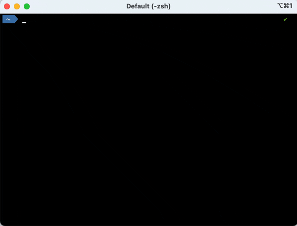
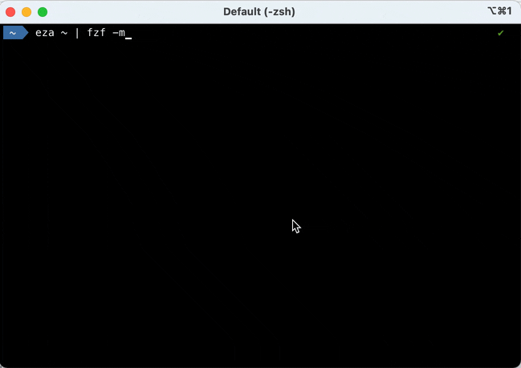

A few unix-like terminal tricks 🧙
Assumed audience: developers interested in using the terminal for various tasks.
As a developer, I like using shell commands in my terminal. Here are a few random tips I have. Maybe you can learn from them, or give me back your tips/advises?
Simplified help using tldr 📝
I cannot remember all command options, and I like to find help in my terminal, without using internet or AI.
So I often use tldr as a cheat sheet, it's OK for many common options!
For instance, tldr npm outputs:
JavaScript and Node.js package manager.
Manage Node.js projects and their module dependencies.
More information: <https://www.npmjs.com>.
Create a `package.json` file with default values (omit `--yes` to do it interactively):
npm init -y|--yes
Download all the packages listed as dependencies in `package.json`:
npm install
Download a specific version of a package and add it to the list of dependencies in `package.json`:
npm install package_name@version
Download the latest version of a package and add it to the list of dev dependencies in `package.json`:
npm install package_name -D|--save-dev
Download the latest version of a package and install it globally:
npm install -g|--global package_name
Uninstall a package and remove it from the list of dependencies in `package.json`:
npm uninstall package_name
List all locally installed dependencies:
npm list
List all top-level globally installed packages:
npm list -g|--global --depth 0
Aliases 📛
Permanent aliases
Use case: speed-up typing for frequently used commands.
For instance, since I often use Maven's mvn commands in my terminal, I have defined this alias in my shell configuration:
alias mvncist="mvn clean install -DskipTests"
Then I can just type mvncist to build any Maven project without running tests.
On-demand aliases
Use case: speed-up typing for commands used intensively during a given period.
For instance, as a developer, I do not use the docker CLI every day, but I often use it intensively when updating a Docker image or debugging an issue.
I will thus create this ephemeral for my current shell session, alias d=docker, then:
d ps
d images
# and so on...
Filtering the output 🔎
with grep
Piping with grep or similar commands like ag, "the silver searcher" is OK when I know what to search for.
For instance, I often run the df -h | grep disk1s1 command to know available space from my local hard drive.
with fzf, the "command-line fuzzy finder"
When I don't exactly know out to filter the output, I use fzf, the "command-line fuzzy finder".
For instance, when I want to know Java Development Kits that I have installed, I run sdk list java | fzf.

When I want to filter then copy several lines from command's output, the --multi (short -m) option is neat.
For instance, eza ~ | fzf -m.

TUIs for speed! ⚡️
I often use the following Text-based User Interfaces (or Terminal-based), aka TUIs:
-
tig to navigate git commits quickly (even if I usually use
gitin my terminal or within my favorite IDE) -
lazydocker for managing docker containers quickly (even if usually use the
dockercommand directly) -
diskonaut for identifying big files on my hard disk drive
-
user-stars GitHub CLI extension to search my GitHub stars
Thanks to my colleagues who helped me learning these tricks: Amazigh, Alexis, Stéphane, Yoann, Jean-Christophe...and all the others I forget (please forgive me)! 🤗
That's all I got, nerds! 🤓